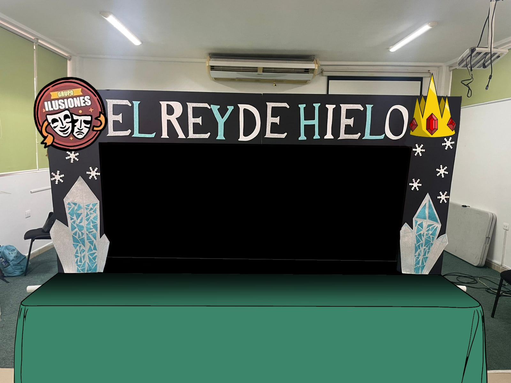
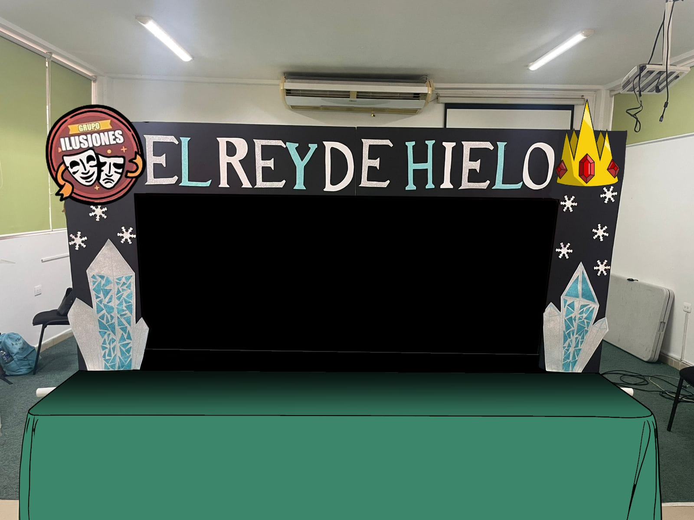

Sobre El Proyecto
Nos solicitaron realizar y producir una obra de teatro basada en un cuento infantil. Mi equipo eligió adaptar el relato de La Reina de Hielo.
Realizando una reinterpretación creativa de la historia original. En nuestra versión, sugerimos sustituir a la reina por un rey, transformando el enfoque del cuento y dándole un giro más oscuro y trágico.
El personaje principal, ahora un rey, se convierte en una figura atormentada tras la muerte de su amada. Incapaz de sobrellevar el dolor, decide abandonar su reino y aislarse. En su huida, es engañado por un antiguo espectro que se aprovecha de su vulnerabilidad. Sin saberlo, el rey se convierte en una marioneta más de esta entidad maligna, quien lo manipula para extender una helada invernal que trae consigo muerte y desolación, alimentándose lentamente del alma del rey.
La esperanza surge cuando una joven herbolaria, valiente y decidida, emprende un viaje para salvar a su hermano menor, gravemente enfermo. Sabe que la única forma de curarlo es encontrando un antiguo amuleto que está en posesión del Rey de Hielo. Su travesía la llevará a enfrentarse no solo a los peligros del invierno eterno, sino también a los misterios que envuelven al rey y al espectro que lo controla.


Técnica De Enanos Falsos
La técnica de enanos falsos es un recurso escénico usado para alterar la percepción del tamaño de los personajes. Utiliza actores más pequeños con vestuario similar y distancia focal para crear la ilusión de proporciones modificadas.
En qué consiste? Se basa en crear la ilusión visual de que un actor es mucho más bajo de lo que realmente es, mediante un conjunto de elementos como:
🔧 Elementos técnicos de la técnica de enanos falsos :
Disfraz modificado: El actor se arrodilla o camina en cuclillas, y el vestuario está diseñado para ocultar sus piernas reales. Se añaden unas piernas falsas que cuelgan delante, dando la ilusión de que el actor es más pequeño.
Proporciones visuales Se agrandan la cabeza, manos o accesorios del personaje para exagerar su tamaño "pequeño" y reforzar el efecto visual.
Escenografía adaptada Se puede utilizar mobiliario o decorados sobredimensionados para que los enanos parezcan aún más pequeños (por ejemplo, sillas enormes o puertas gigantes).
Técnicas de movimiento El actor debe moverse como si fuera un personaje de menor tamaño: pasos más cortos, movimientos rápidos, posturas encorvadas, etc.
Iluminación y ángulos El uso estratégico de luces y sombras puede ayudar a reforzar la ilusión o esconder partes del cuerpo que no deben verso.
-
En resumen nesecitamos;
- Vestuario duplicado
- Manipulación de perspectiva
- Iluminación estratégica


Escenografía
El estilo visual se basa en ambientes realistas con un toque fantástico. Se utiliza utilería hecha a mano para dar textura y realismo a las escenas. Además, se emplea fondo verde (croma) para insertar paisajes digitales y efectos especiales.
Nos solicitaron construir una estructura que posteriormente sería decorada con elementos representativos de la obra. Para ello, desarrollamos diversos recursos visuales y decorativos, incluyendo estructuras inspiradas en pilares de hielo, que evocan el ambiente helado y mágico de la historia.
Además, creamos un logotipo, planos y varias ilustraciones que sirvieron como referencia para el desarrollo de la actividad. Algunos de estos elementos fueron utilizados también en la elaboración de pósters, animaciones y recursos visuales para el storyboard, aportando cohesión estética y narrativa al proyecto.
La escenografía en el teatro es el conjunto de elementos visuales que conforman el espacio físico donde se desarrolla una obra teatral. Su objetivo es ambientar la escena , reforzar la narrativa y apoyar la acción dramática , ayudando al público a situarse en el tiempo y lugar en el que ocurre la historia.
Elementos que incluyen la escenografía:
Decorados : estructuras que representan lugares (una casa, un bosque, una ciudad, etc.).
Mobiliario y objetos :
sillas, mesas, lámparas, herramientas, etc.
Fondos y telones : pueden ser pintados, proyectados o construidos para simular paisajes o interiores.
Iluminación : crea atmósferas, destaca personajes y marca momentos dramáticos.
Colores y texturas :
aportan información emocional, simbólica o histórica.
Efectos especiales :
humo, nieve, fuego falso, lluvia, etc.
Funciones de la escenografía:
Situar la acción en un tiempo y espacio determinados.
Enriquecer la estética de la obra.
Apoyar la narrativa visualmente.
Facilitar la interacción de los actores con el entorno.
Reflejar el estilo o la visión del director.
En resumen, la escenografía no solo es el “decorado” de una obra, sino una parte integral del lenguaje teatral que dialoga con los actores, la historia y el espectador.
 

ESTE TRABAJO FUES ESCRITO POR MARCO ANTONIO MARTINEZ ZAVALA
ALUMNO DEL CETRO UNIVERSITARIO REPUBLICA DE MEXICO